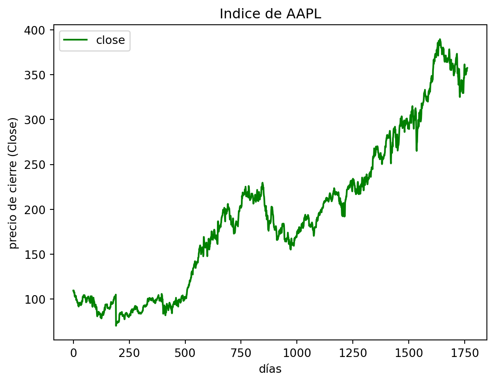

Las redes LSTM (Long Short-Term Memory) son un tipo especial de redes neuronales recurrentes diseñadas con celdas de memoria que mantienen su estado a largo plazo. El principal objetivo de este tipo de redes es la solución del desvanecimiento del gradiente experimentado en las redes recurrentes. Globalmente, el flujo computacional de LSTM se ve de la siguiente manera:
Flujo computacional de LSTM
Las redes neuronales recurrentes pasan solo un estado oculto \(h_t\) a través de cada iteración. Pero LSTM pasa dos vectores: \(h_t-\)estado oculto (memoria a corto plazo) y\(c_t-\)estado celular (memoria a largo plazo).
Las salidas de la celda LSTM se calculan a traves de las fórmulas que se muestran a continuación:
\(i_t\)(puerta de entrada) es la variable que se utiliza para actualizar el estado de la celda \(c_t\). El estado previamente oculto \(c_t\) y la entrada secuencial actual \(x_t\) se dan como entrada a una función sigmoidea. Si la salida está cerca a uno, más importante es la información.
\(f_t\)(puerta de olvido) es la variable que decide que información debe olvidarse en el estado de celda \(c_t\). El estadp previamente oculto \(h_t\) y la entrada de secuencia \(x_t\) se dan como entradas a una función sigmoidea. Si la salida \(f_t\) está cerca de cero, entonces la información puede olvidarse, mientras que si la salida esta cerca de uno, la información debe almacenarse.
\(g_t\) representa información importante potencialmente nueva para el estado celular \(c_t\).
\(c_t\)(estado celular) es una suma de:
Estado de celada anterior \(c_{t-1}\) con alguna información olvidada \(f_t\).
Nueva información de \(g_t\).
\(o_t\)(puerta de salida) es la variable para actualizar el estado oculto \(h_t\).
\(h_t\)(estado oculto) es el siguiente estado oculto que se calcula seleccionando la información importante \(o_t\) del estado de celda \(c_t\).
La siguiente figura muestra el gráfico computacional de la celdaLSTM:
Gráfico computacional de LSTM
La red LSTM tiene los siguientes parámetros, que se ajustan durante el entrenamiento:
Los modelos LSTM son lo suficientemente potentes como para aprender los comportamientos pasados más importantes y comprender si esos comportamientos pasados son características importantes para hacer predicciones futuras. Hay varias aplicaciones en las que las LSTM se utilizan mucho. Aplicaciones como reconocimiento de voz, composición musical, reconocimiento de escritura a mano.
Particularmente considero que las LSTM es como un modelo que tiene su propia memoria y que puede comportarse como un humano inteligente en la toma de desiciones.
Pronósticos para el índice de AAPL utilizando una red LSTM
A continuación realizaremos un ejercicio donde intentamos pronósticar el precio de cierre (Close) del índice de AAPL, la data la puede encontrar dando click en prices-split-adjusted.csv .
C:\Users\juani\AppData\Local\Temp\ipykernel_18008\2001173417.py:4: FutureWarning:
The pandas.datetime class is deprecated and will be removed from pandas in a future version. Import from datetime module instead.
Cargamos el DataSet y lo almacenamos en la variable df y data_df. La data almacenada en data_df es la que utilizaremos para realizar todo nuestro estudio.
Este bloque de código fue de mucha utilidad, dado que aquí filtramos de nuestro dataset unicamente la información para el indice de AAPL y visualizamos la data.
Preliminarmente con este bloque de código podemos ver como se comporta la serie correspondiente al precio de cierre de las acciones de AAPL.
plt.figure(figsize=(15, 5));plt.subplot(1,2,1);plt.plot(df[df.symbol =='EQIX'].close.values, color='green', label='close')plt.title('Indice de AAPL')plt.xlabel('días')plt.ylabel('precio de cierre (Close)')plt.legend(loc='best')
<matplotlib.legend.Legend at 0x236b99436a0>

Necesitamos manipular nuestro campo de fecha para poder manipularlas como lo que son en realidad (fechas).
data_df['date'] = data_df.indexdata_df.head()
open
close
low
high
volume
date
date
2010-01-04
30.490000
30.572857
30.340000
30.642857
123432400.0
2010-01-04
2010-01-05
30.657143
30.625713
30.464285
30.798571
150476200.0
2010-01-05
2010-01-06
30.625713
30.138571
30.107143
30.747143
138040000.0
2010-01-06
2010-01-07
30.250000
30.082857
29.864286
30.285715
119282800.0
2010-01-07
2010-01-08
30.042856
30.282858
29.865715
30.285715
111902700.0
2010-01-08
data_df['date'] = pd.to_datetime(data_df['date'])
Transformamos los datos con MinMaxScaler() para que se distribuyan normal estándar, recuerde que esto es con media cero y varianza 1.
# convertir una matriz de valores en una matriz de conjunto de datosdef create_dataset(dataset, look_back=15): dataX, dataY = [], []for i inrange(len(dataset)-look_back-1): a = dataset[i:(i+look_back), 0] dataX.append(a) dataY.append(dataset[i + look_back, 0])return np.array(dataX), np.array(dataY)
Note que nuestros resultados son muy buenos, sin embargo, podrían mejorarse, quizas aplicando más capas ocultas a nuestra red, recuerde que solo utilizamos 20. Este podría ser un buen ejercicio para que usted intente mejorar estos resultados.
Recuerda que puedes comentar este post, agradeceria que lo hagas ya sea para alguna sugerencia u observación. Saludos espero hayas conocido un poco sobre este tipo de Red Neuronal en particular y su potente poder predectivo.